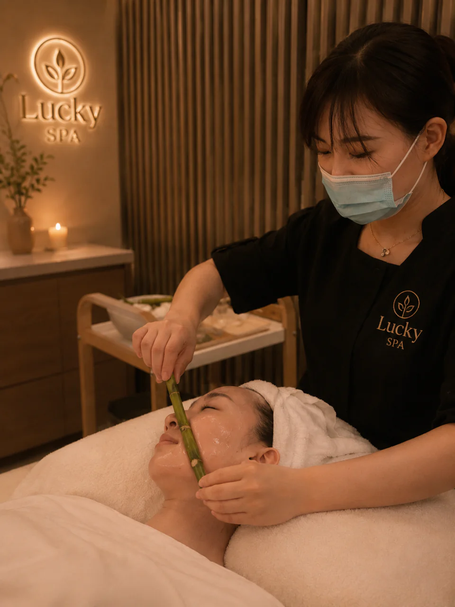
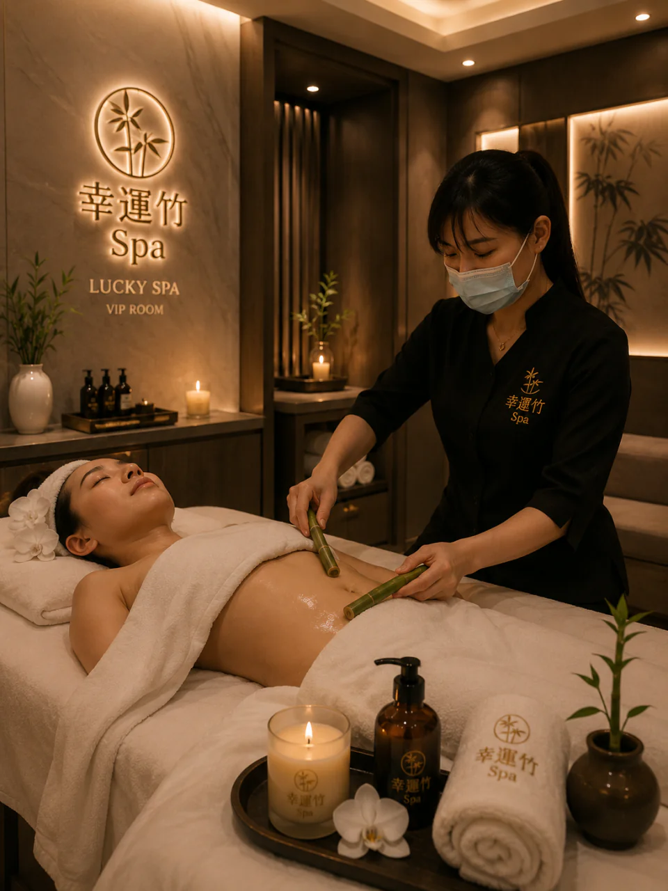
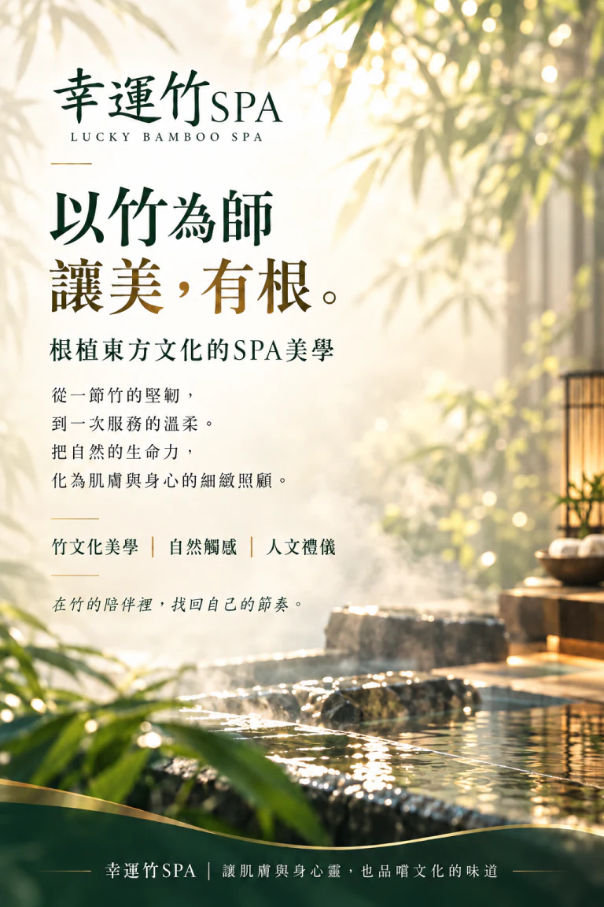
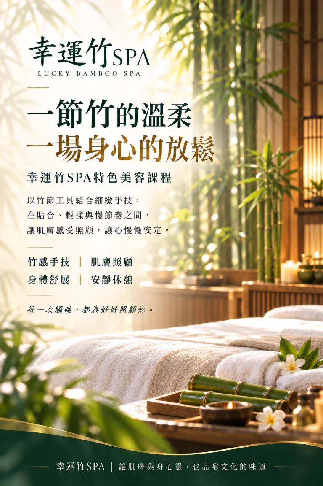
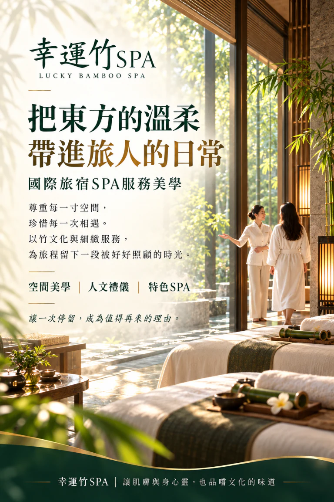
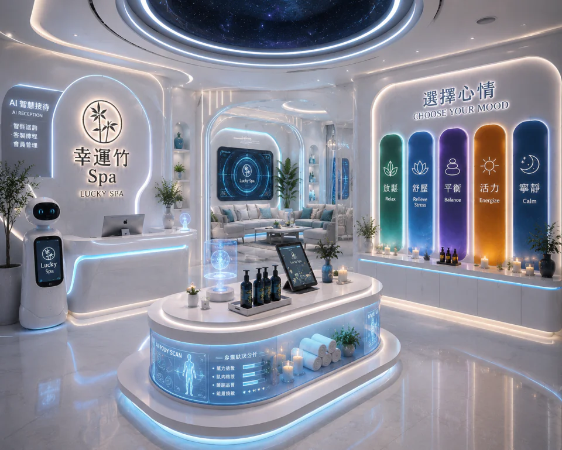
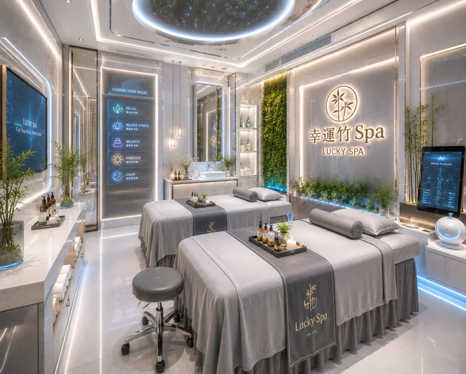
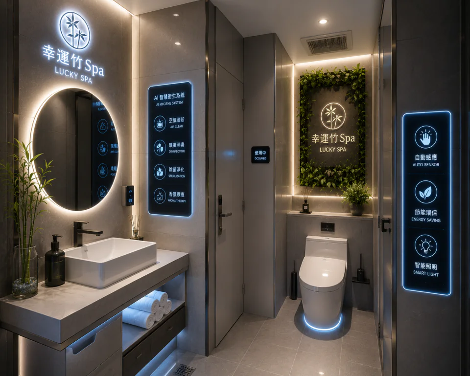
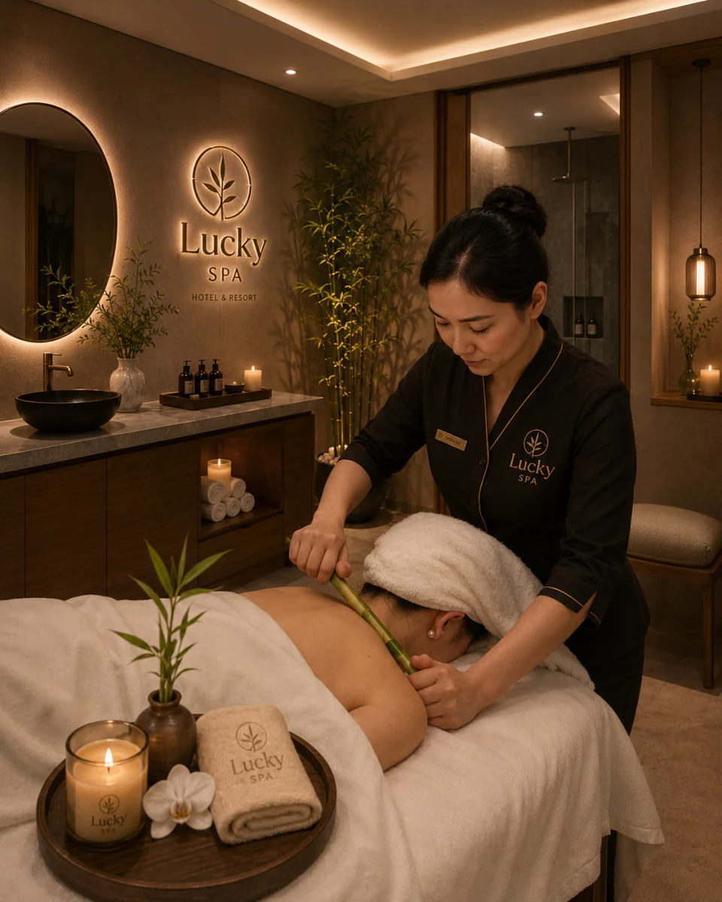

Face treatment
臉部課程
60-90 分鐘- 適合狀態
- 暗沉、乾燥、毛孔、膚觸不穩或肩頸張力。
- 服務構成
- 迎賓放鬆、清潔整理、幸運竹手技、導入敷臉與修護收尾。
- 主要部位
- 臉部、頸肩、前胸淋巴、手部與頭部。
- 安排方式
- 去角質、粉刺整理與保養品依膚況調整，不做固定套版。
YOUR MOMENT OF CARE
初次到店不必先懂課程名稱。芳療師會依膚況、緊繃、可停留時間與當日感受，安排合適的服務內容。


THE ART OF BAMBOO
從一節竹的堅韌，到一次服務的溫柔。把自然的生命力，化為肌膚與身心的細緻照顧，也讓每一次相遇多一點從容。

閱讀完整海報01 / PHILOSOPHY
竹文化美學、自然觸感與人文禮儀，在竹的陪伴裡，找回自己的節奏。

閱讀完整海報02 / TREATMENT
以竹節工具結合細緻手技，在貼合、輕揉與慢節奏之間，讓肌膚感受照顧，在身體舒展與安靜休憩之間，讓心慢慢安定。

閱讀完整海報03 / HOSPITALITY
尊重每一寸空間，珍惜每一次相遇。以旅宿 SPA 服務美學、細緻禮儀與特色課程，讓停留成為值得再來的理由。
品牌情境視覺呈現幸運竹的服務美學；實際空間與課程安排依預約諮詢為準。
A THOUGHTFUL EXPERIENCE
心情選擇、到店接待、狀態紀錄與環境感控協助降低不確定感；芳療師再依膚況、緊繃與當日需要安排。
數位工具提供一致的資訊入口，不取代芳療師的觀察與專業判斷。




ROOTED IN TAIWAN
幸運竹象徵生命力、潔淨、韌性與向上生長。服務上不把文化停在命名，而是讓它進入溫度、部位、香氣與顧客溝通。
手技原則以溫度、節奏與部位選擇，溫柔梳理緊繃，協助身體慢慢鬆開。
服務邏輯把美容、經絡、芳療與諮詢整合成一次可被理解、可被延續的照顧。
IN RHYTHM WITH NATURE
課程名稱幫助記憶；真正的選擇仍回到膚況、循環、壓力位置與可停留時間。精油也不是單獨販售的氣味，而是課程判斷的一部分。
THE DETAILS OF HOSPITALITY
顧客在每一步都知道現在在哪裡、接下來會發生什麼，也知道自己的需求被記得。清楚的流程不是制式，而是降低第一次體驗的不確定感。
A LITTLE TIME FOR YOURSELF
選擇家庭、工作、財運或人際主題，完成接球後得到一段狀態文字；到店後，再由芳療師轉成精油、部位與身體照顧。
開始接球遊戲遊戲結果是諮詢入口，不取代現場身體觀察與專業判斷。
LET US TAKE CARE OF YOU
來信時可先告訴我們：希望安排的時間、人數，以及最想照顧的狀態。合作可依場域規劃快速體驗、專業課程或教育訓練。
預約與合作諮詢 ubodyspa@gmail.com